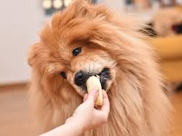

Ready to Adpot a pet?
Let's get started and you can find your pet here!


Introduction
At Chino Hills Pets Adoption Service, we offer a diverse range of pets waiting to find their forever homes. From playful puppies and kittens to serene adult dogs and cats, we have a pet that will perfectly complement your lifestyle. We also provide a home for smaller animals like rabbits, guinea pigs, and birds. The adoption process is designed to be simple yet thorough. Prospective adopters are first invited to visit our facility to meet our wonderful animals. After choosing a pet that you connect with, you'll go through a short interview and complete some paperwork to ensure a responsible and lasting match. Our staff will guide you every step of the way, from the initial visit to post-adoption support, to ensure a smooth transition for both the pet and its new family.
Available Pets
| Picture | Name | Type | Age | Brief Description | Status |
|---|---|---|---|---|---|
| Max | Dog | 2 years | Friendly and energetic | Available | |
| Luna | Dog | 3 years | Quiet and loves to cuddle | Available | |
| Buddy | Dog | 1 year | Playful and good with kids | Pending | |
 |
Molly | Dog | 5 years | Calm and well-trained | Available |
|  | Rex | Dog | 6 months | Puppy, energetic | Available |